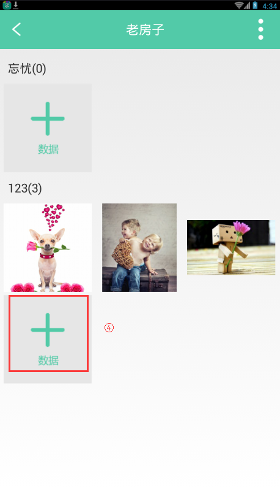
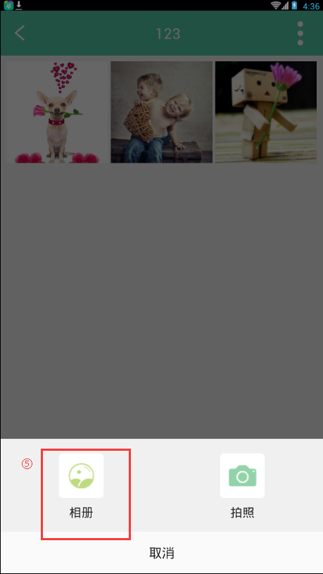
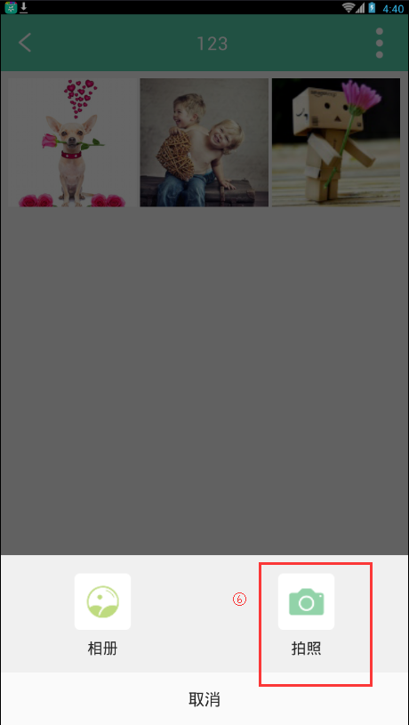
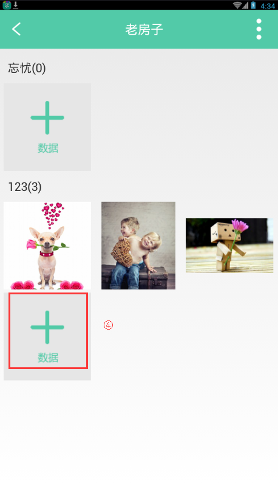
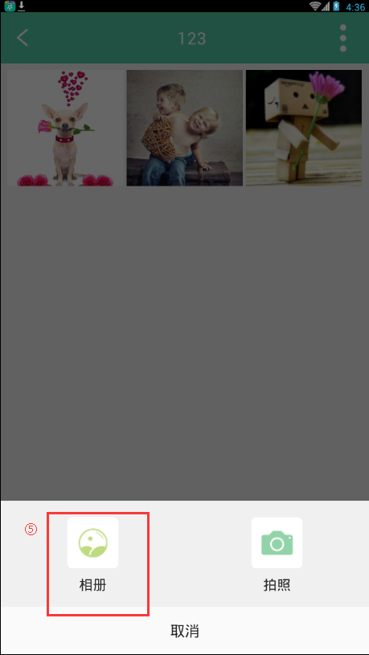
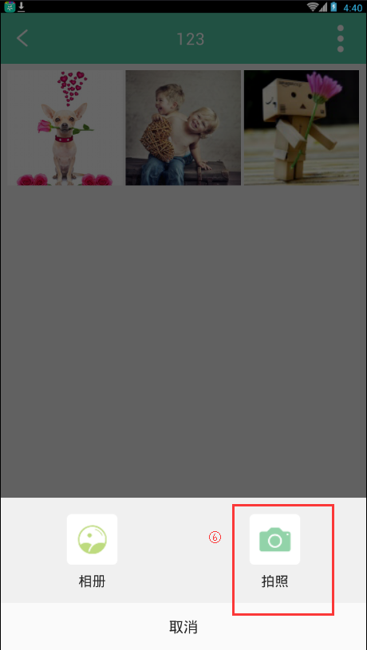

19. 如何在文件夹内部上传图片？
1. 导航栏点击"空间"->"私人空间"->"老房子"。

2. 进入文件夹页面，点击"+数据"。
3. 在上传照片弹框中选择"相册"，打开系统相册。
4. 在上传照片弹框中选择"拍照"，打开系统相机，拍照上传。
1. 导航栏点击"空间"->"私人空间"->"老房子"。
2. 进入文件夹页面，点击"+数据"。
3. 在上传照片弹框中选择"相册"，打开系统相册。
4. 在上传照片弹框中选择"拍照"，打开系统相机，拍照上传。
